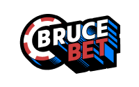

Ice Poseidon: Digital Frontier
Welcome to the command center for streaming icon Ice Poseidon. This is your source for every high-stakes wager, real-life broadcast, and definitive gaming moment. Get direct access to the action.
Access Live FeedPremier Gaming Arenas
Explore the elite online casinos that serve as the backdrop for Ice Poseidon's streaming sessions. These platforms are handpicked for their superior game offerings and robust performance.

Bethall Casino Intel
Famed for its vast game library and compelling bonus structures. A regular choice for Ice's high-limit streams, showcasing his slot and table game strategies.
Enter Bethall

The Brucebet Sector
Offers a futuristic slot experience and an impeccable mobile interface, perfect for streaming from any location. Ice values Brucebet for its cutting-edge platform.
Enter Brucebet
Vincispin Missions
The top venue for live dealer action and competitive events. Watch Ice compete for top honors in Vincispin's immersive and high-energy tournament setting.
Enter VincispinGame responsibly. The casinos featured are platforms for entertainment. Individual outcomes will vary. Confirm you are of legal gambling age in your jurisdiction before playing.
Live Feed
You've tapped into the main source. Ice Poseidon broadcasts live on Kick. This embedded player is your direct line to his stream. If he's live, you'll see it here. If not, his channel has archives of past broadcasts.
Kick ChannelThe Legend of Ice Poseidon
Architect of Modern Streaming
Paul Denino, known to the world as Ice Poseidon, is a foundational figure in live internet entertainment. As a key innovator of IRL (In Real Life) streaming, Ice has built a massive following through a distinct combination of humor, unpredictability, and raw realism.
From nationwide journeys to conquering high-stakes digital casinos, his broadcasts are a masterclass in fearless content creation. He consistently redefines the streaming landscape, offering his community an unfiltered look into his life.
Currently, Ice channels his signature style into the world of casino gaming, delivering electrifying sessions on premier slots and games. This website is your official HQ for his latest casino campaigns and strategies.
Essential Intel
Ice Poseidon (Paul Denino) is a key American streamer who was instrumental in popularizing IRL (In Real Life) broadcasting. His fame comes from his unfiltered, adventurous content, which now includes high-energy casino streams for his CX Network community.
Ice Poseidon's primary broadcast platform is Kick.com. You can find him live at kick.com/iceposeidon. This site includes an embedded player for direct access to the stream.
Ice Poseidon primarily focuses on dynamic online slots, often exploring new titles and playing for high stakes. While slots are his main game, he also engages in various table games like blackjack from time to time.